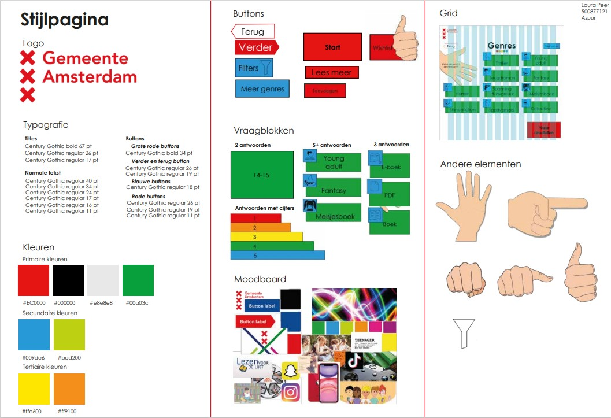
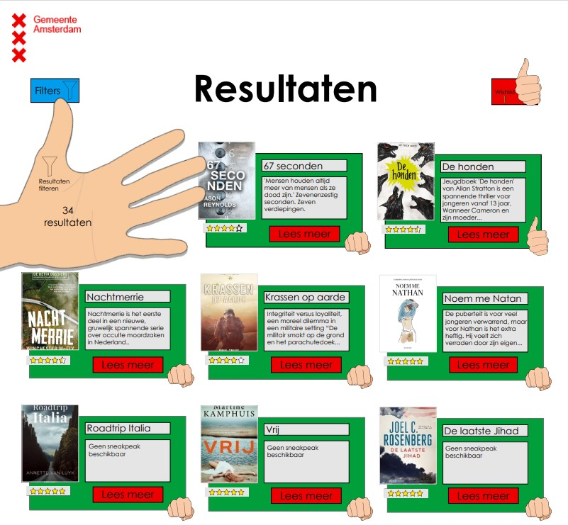
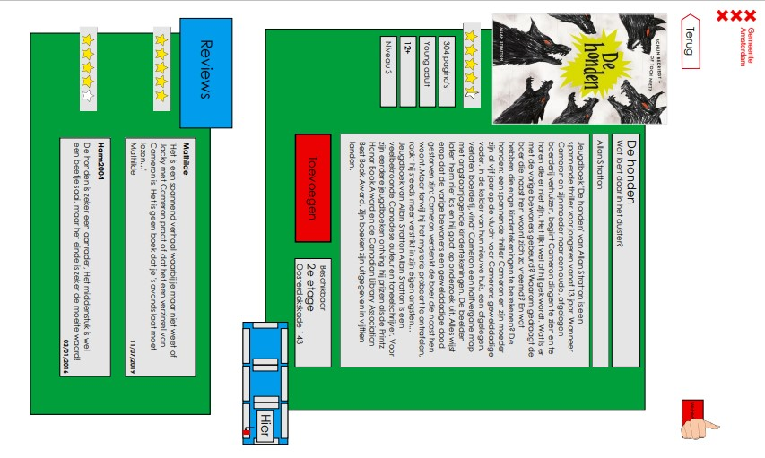
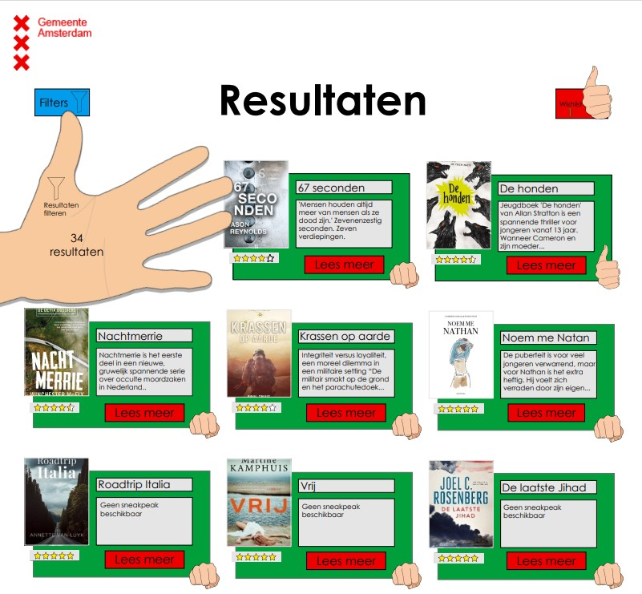
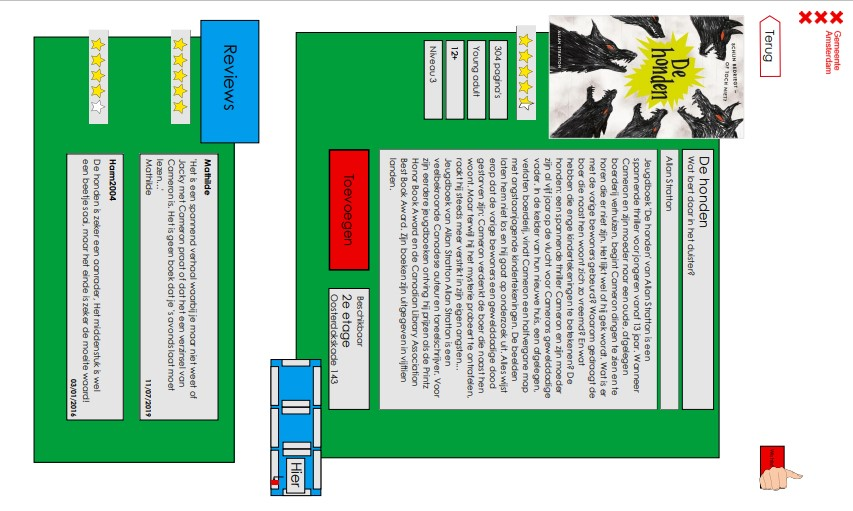

Boekzoeker
Voor het vak Visual Interface Design (VID) kregen we de opdracht om voor de gemeente Amsterdam een boekzoeker te maken. Voor deze opdracht moesten we eerst onderzoek doen naar de stijl van gemeente Amsterdam. In een stijlpagina heb ik de belangrijkste elementen opgenomen die ik gebruikt heb in de schermen.
Een aantal van de pagina's
 


